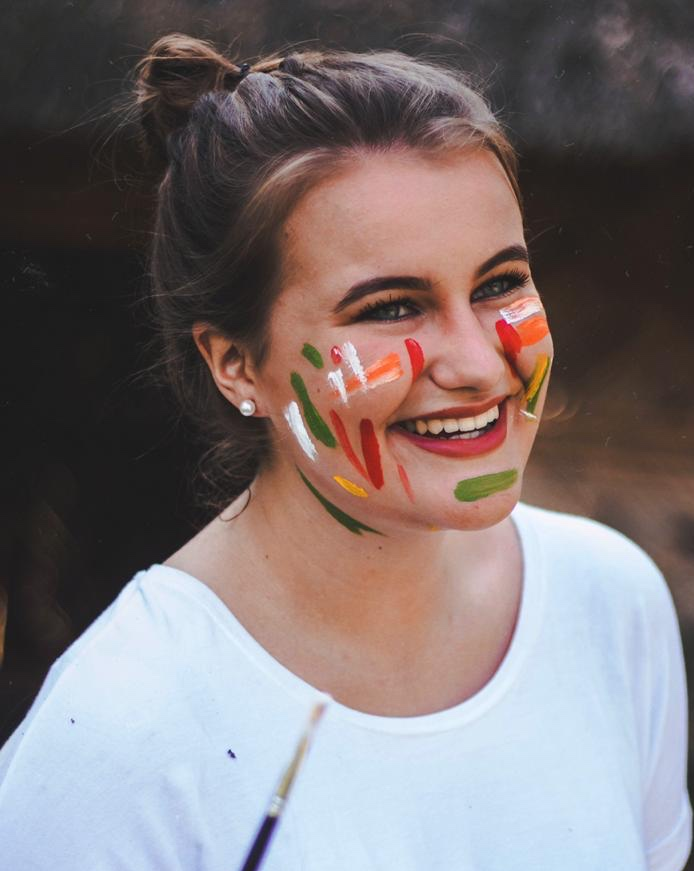
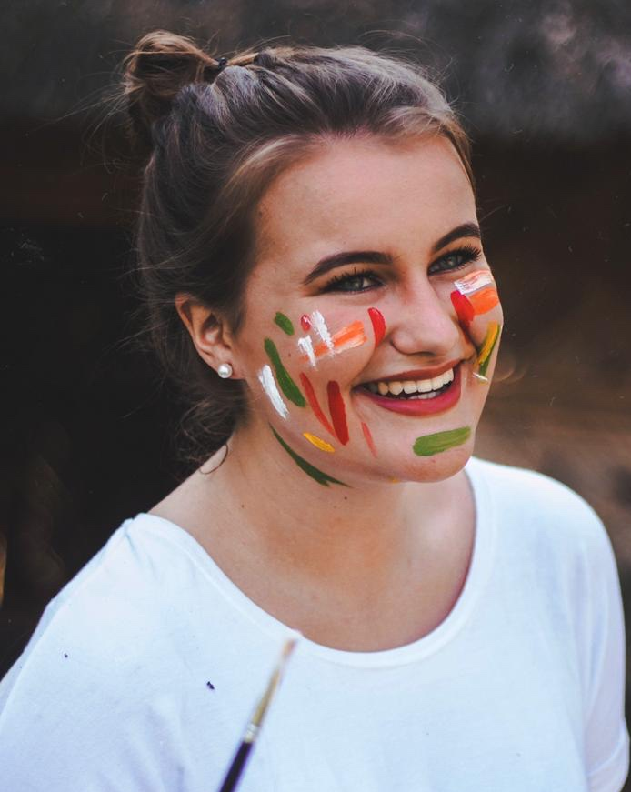

Designing Interactions.
Connecting People.
Product & UX Designer • Creative Technologist • MSc HCI
I design end‑to‑end product experiences: from framing the problem with users and stakeholders, to high‑fidelity prototypes.
 
